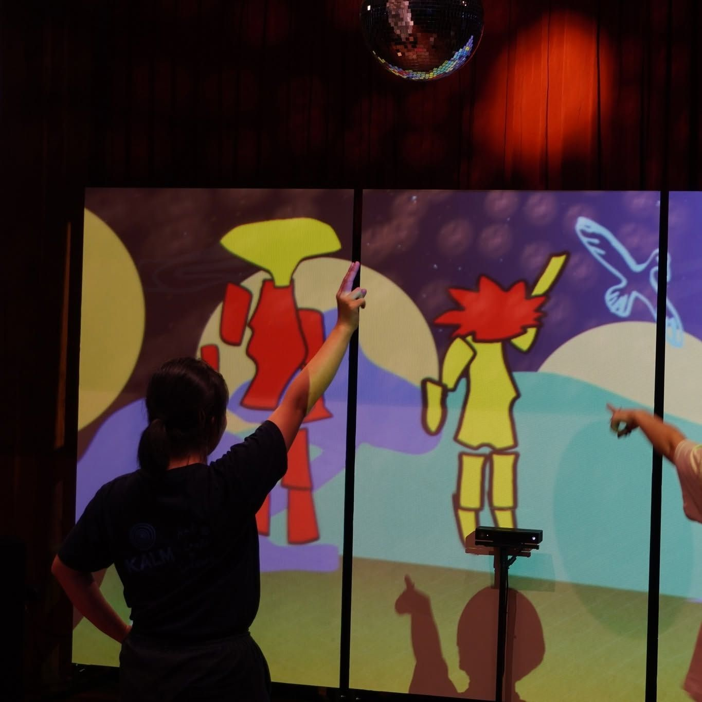

An interactive exhibition for ALaLa Dance Fest 2024, "Tatonyon: (Dance) Beyond Time", at Kalm Village, Chiang Mai, made with tomorrow.lab. In Magical Cave Wall Dance (ฟ้อนผาเวทย์), visitors dance in front of a virtual cave wall and appear on it as cave paintings; the dances of earlier visitors replay while the next person waits, the way cave paintings record earlier generations. In Imagine Future, visitors design their own futuristic cross-culture with AI and see it as a hologram. A third activity sends them in search of mythical spirits from several cultures.